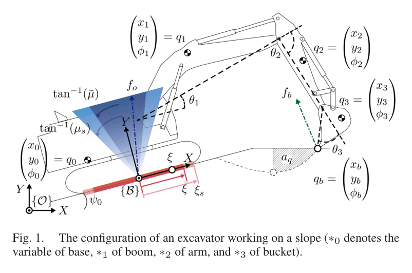
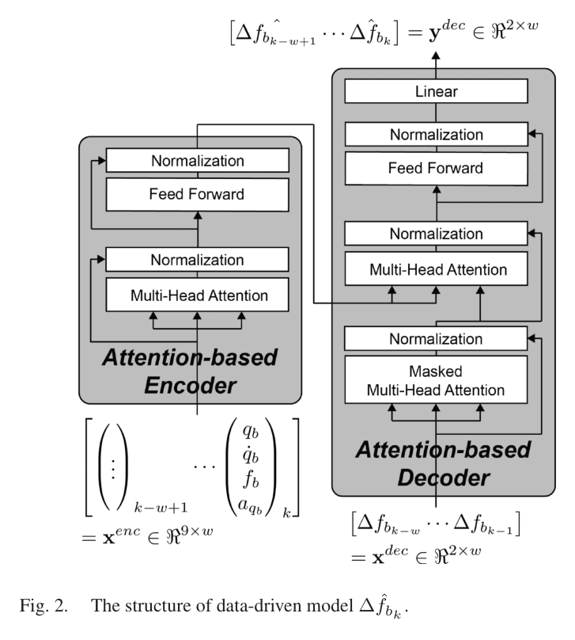
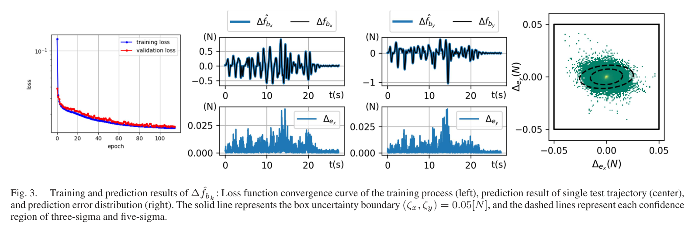
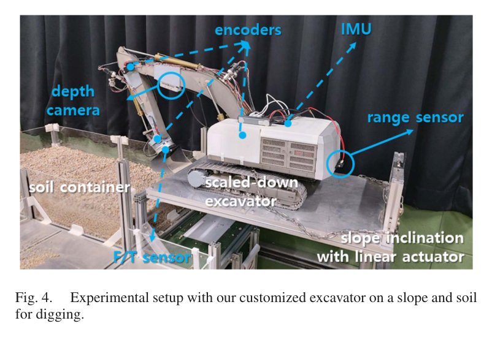
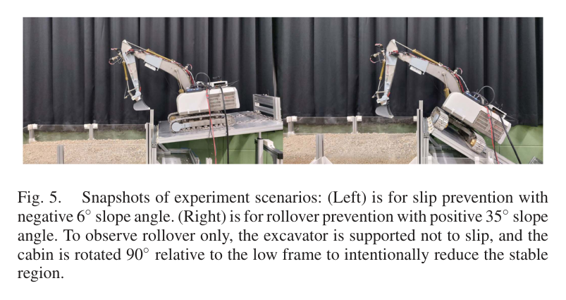
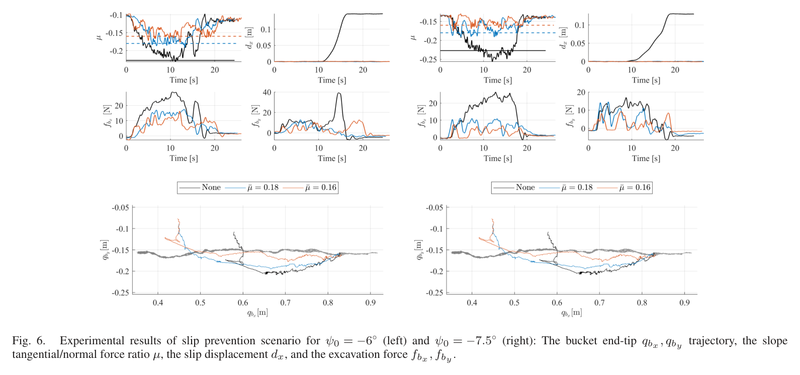
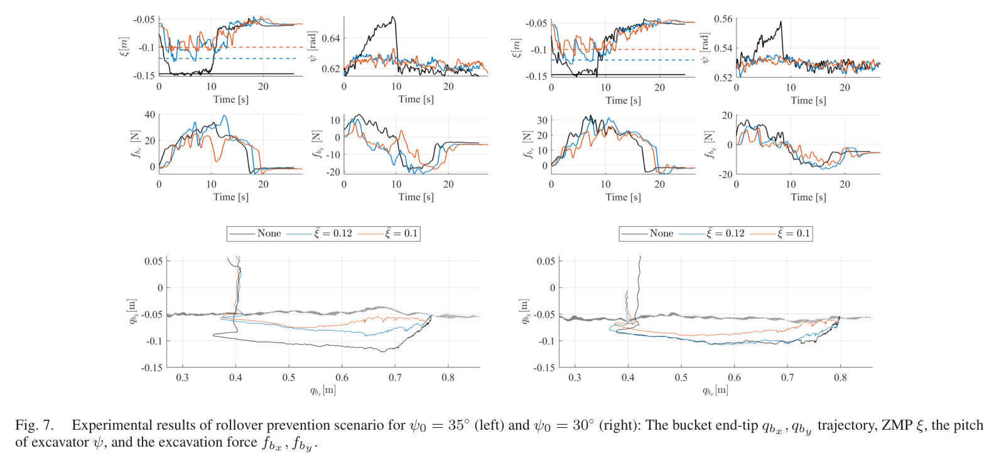
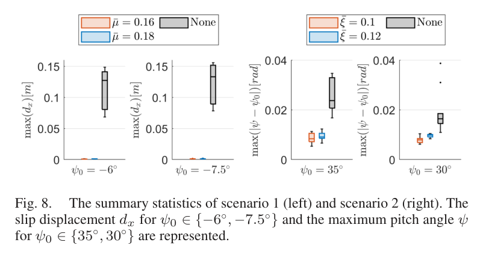
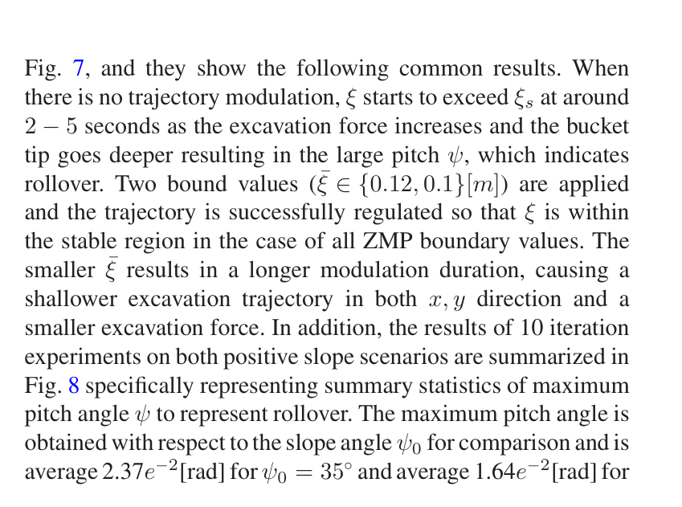

Real-Time Excavation Trajectory Modulation for Slip and Rollover Prevention
ChangU Kim, Bukun Son, Minhyeong Lee, Hyelim Choi, Seokhyun Hong, Minsung Kang, Jihyun Moon, Dongmok Kim, Dongjun Lee · IEEE Robotics and Automation Letters (RA-L)
한줄 요약 — DMP가 생성한 nominal 굴착 궤적에 최소 크기의 변조 입력을 더하되, 공통 양의 분모를 갖는 미끄럼 지표 μ와 전도 지표 ξ를 선형 부등식으로 변환하고 Transformer 굴착력 예측오차를 robust box로 처리하여, 음의 경사면에서는 미끄럼을 거의 제거하고 양의 30°·35° 경사에서는 차체 pitch 증가를 억제했다.
1.연구 배경 및 동기
굴착력 때문에 발생하는 경사면 미끄럼과 전도를 예측해 궤적을 즉시 변조
경사면에 정차한 굴착기는 버킷이 토양을 밀거나 당길 때 발생하는 반력이 차체 접지력과 지지다각형 안정성을 동시에 바꾼다. 경사 방향 접선력과 법선력의 비가 정지마찰 한계를 넘으면 crawler가 미끄러지고, 전체 시스템의 zero-moment point가 지지영역 밖으로 이동하면 전도가 시작된다. 일반적인 nominal 굴착 궤적은 작업 형상과 생산성은 고려하지만, 토질과 자세에 따라 달라지는 다음 순간의 반력을 미리 알지 못하므로 작업 도중 안전 한계를 넘을 수 있다.
논문은 기존 DMP 궤적을 폐기하지 않고 조인트 가속도에 작은 modulation을 더해 위험할 때만 움직임을 수정한다. 미끄럼 지표 μ와 전도 지표 ξ가 동일한 양의 수직반력 분모를 가진다는 점을 이용해 두 안전조건을 modulation 입력에 대한 하나의 선형 부등식 계열로 정리한다. 디지털 제어에서 다음 명령이 적용될 때의 굴착력이 필요하므로 Transformer가 최근 상태·힘·굴착 면적 이력으로 힘의 차분을 예측하며, 예측 오차는 고정 box 불확실성으로 감싸 robust optimization에서 최악 조건까지 만족하도록 한다.

원문 Figure 1 · PDF p.3 — Fig. 1. The configuration of an excavator working on a slope (∗0 denotes the variable of base, ∗1 of boom, ∗2 of arm, and ∗3 of bucket).
선행 연구의 한계
nominal 궤적 추종만으로는 경사면의 마찰 여유와 zero-moment point를 작업 중 직접 보장하지 못한다.
미끄럼과 전도를 별도 비선형 조건으로 처리하면 실시간 최적화가 복잡해지고 두 위험의 동시 우선순위 설정이 어렵다.
현재 센서로 측정한 굴착력은 이미 적용된 명령의 결과이므로 다음 제어입력의 안전성을 판단하기에는 한 스텝 늦다.
점 추정된 토양력만 사용하는 제약은 예측오차가 커지는 순간 안전 경계를 넘을 수 있다.
이 연구의 기여
마찰력 비 μ와 ZMP 지표 ξ를 공통 분모를 이용해 modulation 입력에 대한 선형 안전 제약으로 통합했다.
과거 상태·굴착력·진행 면적과 힘 차분을 사용하는 encoder-decoder Transformer로 다음 시점 굴착력을 예측했다.
예측 힘을 box 불확실성 집합으로 확장하고 최악 조건을 해석적으로 반영한 실시간 robust QP를 제시했다.
축소형 유압 굴착기의 음·양 경사면 반복 실험에서 미끄럼 거리와 rollover 관련 pitch를 각각 억제했다.
2.방법론 및 시스템 구성
기준 운동은 DMP의 2차 미분방정식으로 생성하며, 조인트 공간 forcing term에 modulation u를 더한다. 굴착기 링크 가속도와 지면 반력은 조인트 상태, modulation과 측정 또는 예측 굴착력의 함수로 표현된다. 경사면 접선·법선 반력의 비 μ는 정지마찰계수보다 작은 내부 경계 bar μ 안에 있어야 하고, 경사 좌표에서 계산한 ZMP 편차 ξ도 지지영역의 임계값보다 작은 bar ξ 안에 있어야 한다.
두 지표의 분모인 총 법선반력이 양수라는 조건을 별도로 보장하면 절댓값 안전식의 분모를 곱해 선형 부등식으로 바꿀 수 있다. explicit Euler로 다음 상태를 예측한 뒤 Transformer가 다음 굴착력 차분을 출력한다. 예측값 주변 ±0.05 N의 box를 설정하고, 선형 제약에서 box가 만드는 최악의 내적을 1-norm 형태로 치환한다. 최종 QP는 modulation 크기와 직전 입력과의 변화를 최소화하면서 물리적 modulation 범위, 분모 양수와 slip·rollover 제약을 동시에 만족한다.
처리 파이프라인
1
DMP nominal 궤적 생성
학습된 forcing term과 목표 자세를 이용해 기본 굴착 조인트 가속도를 계산한다. 안전 변조가 없으면 원래 작업 궤적을 그대로 수행하고, 최적화 입력 u만 가속도 수준에서 더한다.
2
다음 상태와 안전지표 선형화
현재 조인트 상태에 explicit Euler를 적용해 다음 스텝을 예측하고, 링크 가속도에서 차체 접선·법선 반력과 ZMP를 계산한다. 공통 양의 분모를 제거해 μ와 ξ의 상·하한을 u와 굴착력에 대한 선형 부등식으로 변환한다.
3
Transformer 굴착력 예측
최근 10스텝의 조인트 위치·속도, 측정 힘과 traversed area를 encoder에 넣고 과거 힘 차분을 decoder에 넣어 다음 힘 차분을 예측한다. 100 Hz에서 0.1초 이력만 사용해 실시간성을 유지한다.
4
box 기반 강인 제약 구성
예측한 두 축 굴착력 각각에 ±0.05 N의 불확실성 box를 설정한다. 선형 안전식의 최악 조건을 box support function으로 계산해 모든 허용 예측오차에 대해 경계가 만족되도록 한다.
5
실시간 QP와 궤적 변조
modulation의 크기와 시간 변화율을 최소화하면서 안전·물리 제약을 만족하는 QP를 100 Hz로 푼다. 계산된 입력을 DMP에 더하고 다음 센서 측정과 힘 예측으로 반복한다.
원문 수식과 의미
변조가 포함된 DMP
\ddot q+D\dot q+K(q-q_g)=f_m(s)+u
원문의 식 (1)로, 학습된 nominal forcing term f_m에 안전 modulation u를 더한다. 최적화는 새 궤적 전체가 아니라 u만 조정한다.
통합 안전 부등식
A_u u+A_f f_{\mathrm{exc}}\leq b
미끄럼의 ±μ 경계, 전도의 ±ξ 경계와 양의 법선반력 조건을 공통 분모 제거 후 쌓아 만든 식 (11)의 축약형이다. 계수는 현재 자세와 링크 동역학에서 계산된다.
Transformer 점 예측 주변에 직사각형 불확실성을 두는 식 (14)의 의미다. 실험에서는 ζx=ζy=0.05 N을 사용했다.
강인 궤적 변조 QP
\min_u\;u^TQ_1u+(u-u_{k-1})^TQ_2(u-u_{k-1})\quad\mathrm{s.t.}\;\max_{f\in\mathcal F}(A_u u+A_f f)\leq b
식 (16)~(18)의 핵심으로, 최소한의 부드러운 변조를 선택하면서 box 안의 모든 굴착력에 대해 안전 제약을 보장한다.

원문 Figure 2 · PDF p.4 — Fig. 2. The structure of data-driven model Δ ˆfbk.
3.핵심 기술
미끄럼과 전도를 하나로 묶는 공통 분모 변환
μ는 경사면 접선방향 반력을 법선반력으로 나눈 값이고, ξ는 시스템 전체 무게중심·관성력·굴착력이 만드는 모멘트를 같은 법선반력으로 나눈 ZMP 위치다. 정상 접촉에서는 이 분모가 양수이므로, 각각의 비율 절댓값 제약에 분모를 곱해 선형 상·하한으로 만들 수 있다. 그 결과 서로 다른 안전 개념을 같은 QP 행렬에 쌓아 처리할 수 있다.
안전 한계는 실제 정지마찰 및 지지영역 임계값보다 안쪽에 둔다. slip 실험에서는 측정된 정지마찰 지표 약 0.227보다 작은 0.18 또는 0.16을 사용했고, rollover 실험에서는 안정영역 약 0.147 m보다 작은 0.12 또는 0.10 m를 적용했다. 이러한 여유는 모델·센서 오차가 실제 한계에 도달하기 전에 modulation을 시작하게 한다.
미끄럼 제약은 |μ|<bar μ, 실제 정지마찰 조건은 |μ|<μs로 구분된다.
전도 제약은 |ξ|<bar ξ, 실제 지지영역 한계는 |ξ|<ξs로 구분된다.
법선반력의 양수 조건을 별도 행으로 포함해 분모 변환의 유효성을 유지한다.
두 위험을 동일한 선형 부등식 묶음으로 처리해 100 Hz QP 계산이 가능하다.
굴착력 시계열 예측과 최악오차 방어
Transformer encoder는 10스텝 동안의 9개 특징, 즉 조인트 상태와 굴착력, traversed area를 받아 현재 접촉 맥락을 표현한다. decoder는 같은 길이의 과거 힘 차분을 받아 다음 힘 변화량을 출력한다. 두 attention head와 64개 feed-forward node를 사용하며 padding 없이 100 Hz의 짧은 window에 맞춘 구조다.
학습자료는 양·음 경사에서 수행한 470개 궤적, 약 100만 시점이며 12:3:1로 분할했다. 점 예측이 안전 한계에 직접 쓰이는 위험을 줄이기 위해 두 힘 축에 ±0.05 N의 box를 더하고, QP는 그 box에서 가장 불리한 힘을 가정한다. 실제 계산시간은 한 주기당 10^-3초 미만으로 보고돼 100 Hz 변조기에 여유가 있었다.
Transformer window w는 10으로 100 Hz 기준 0.1초 이력이다.
attention head는 2개, feed-forward node는 64개다.
학습은 TensorFlow Adam, batch 256, 초기 학습률 0.001과 exponential scheduler로 수행했다.
힘 불확실성은 두 축 모두 0.05 N으로 설정했다.

원문 Figure 3 · PDF p.5 — Fig. 3. Training and prediction results of Δ ˆfbk: Loss function convergence curve of the training process (left), prediction result of single test trajectory (center), and prediction error distribution (right). The solid line represents the box uncertainty boundary (ζx, ζy) = 0.05[N], and the dashed lines represent each confidence region of three-sigma and five-sigma.
4.실험 결과
실험 환경·장비·데이터
LESU BA-B0001 축소형 유압 굴착기를 선형 액추에이터로 기울일 수 있는 토양 컨테이너 위에 배치하고 규조토를 작업 재료로 사용했다.
거리 센서는 약 200 Hz, D435는 30 Hz, 기타 상태 센서는 약 200~250 Hz로 측정했고 저수준 제어는 300 Hz, 힘 예측과 modulation은 100 Hz로 실행했다.
온보드 컴퓨터는 Ubuntu 20.04와 ROS가 설치된 3.8 GHz Intel NUC, RAM 16 GB였고 전체 알고리즘은 Python으로 구현했다.
Transformer는 양·음 경사에서 수집한 470개 궤적, 약 100만 데이터 포인트로 학습했다.
실험 프로토콜
미끄럼 실험은 굴착기 전면이 낮아지는 음의 6°와 7.5° 경사에서 수행하고, 무변조 DMP와 강인 변조법을 각각 10회 반복했다.
별도 측정에서 미끄럼이 시작되는 경사는 12.8°, 이에 해당하는 정지마찰 지표는 약 0.227이었다. 제어 경계는 두 경사에서 각각 0.18과 0.16으로 설정했다.
전도 실험은 양의 30°와 35° 경사에서 cabin을 90° 회전하고 미끄럼 방지 지지구를 사용해 rollover 영향만 분리했다.
전도 안정영역은 약 0.147 m였고 제어 경계는 30°에서 0.12 m, 35°에서 0.10 m로 두었다. 무변조와 제안법을 각 조건에서 10회 비교했다.
미끄럼에서는 최종 차체 이동거리, 전도에서는 경사 대비 최대 pitch와 ξ 시간응답을 평가했다.
비교 기준
안전 modulation이 없는 원래 DMP 궤적
Transformer 점 예측에 머물지 않고 box 불확실성을 포함한 제안 robust modulation
미끄럼과 전도를 동시에 유발하지 않도록 실험 장치를 분리한 slip-only 및 rollover-only 조건
평가 지표
마찰 지표 μ와 설정 안전경계
최종 미끄럼 이동거리
ZMP 기반 전도 지표 ξ와 설정 안전경계
경사면 대비 차체 최대 pitch
Transformer 굴착력 예측 거동
QP 및 힘 예측 계산시간

원문 Figure 4 · PDF p.6 — Fig. 4. Experimental setup with our customized excavator on a slope and soil for digging.

원문 Figure 5 · PDF p.6 — Fig. 5. Snapshots of experiment scenarios: (Left) is for slip prevention with negative 6◦slope angle. (Right) is for rollover prevention with positive 35◦slope angle. To observe rollover only, the excavator is supported not to slip, and the cabin is rotated 90◦relative to the low frame to intentionally reduce the stable region.
핵심 결과 해석
음의 경사면에서 무변조 DMP는 약 10초 부근부터 μ가 안전경계를 넘고 차체가 하방으로 이동했다. 10회 반복의 평균 최종 미끄럼 거리는 -6°에서 0.127 m, -7.5°에서 0.133 m였고 대표 궤적은 약 0.147 m까지 이동했다. 제안법은 예측 힘이 경계를 위협할 때 버킷 운동을 조정해 두 경사 모두에서 미끄럼 거리를 거의 0으로 억제했다.
양의 30°와 35° rollover 조건에서 무변조 궤적은 약 2~5초 사이 ξ가 설정 경계를 넘어 차체 pitch가 증가했다. 10회 반복에서 35°의 무변조 최대 상대 pitch 평균은 2.37×10^-2 rad, 30°에서는 1.64×10^-2 rad였으며 제안법은 두 조건 모두 더 작은 값을 보였다. 그림의 시간응답은 변조 입력이 ξ를 내부 안전경계 주변으로 되돌리는 것을 보여준다.
힘 예측과 robust QP의 계산은 10^-3초 미만으로 100 Hz 주기보다 충분히 빨랐다. 그러나 미끄럼과 전도 실험은 서로 다른 자세·지지 조건으로 분리됐고, 단일 평탄 토양과 축소 장비만 사용했다. 안전성 개선은 분명하지만 실제 대형 굴착기에서 두 위험이 동시에 나타나는 3차원 사면에 대한 보장은 아직 없다.
정량 결과
평가 항목
정량 결과
조건·맥락
원문 근거
미끄럼 개시 경사
12.8°
실험 장비와 토양에서 측정한 정지마찰 한계; μs≈0.227
PDF p.6
무변조 평균 미끄럼 거리
0.127 m
-6° 경사, 10회 반복
PDF p.6
무변조 평균 미끄럼 거리
0.133 m
-7.5° 경사, 10회 반복
PDF p.7
제안법 미끄럼 거리
거의 0 m
-6°와 -7.5° 경사 반복 실험
PDF p.7
무변조 최대 상대 pitch 평균
1.64×10^-2 rad
30° rollover 조건, 10회 반복
PDF p.7
무변조 최대 상대 pitch 평균
2.37×10^-2 rad
35° rollover 조건, 10회 반복
PDF p.7
온라인 계산시간
<1×10^-3 s
Transformer 힘 예측과 궤적 modulation을 100 Hz로 실행
PDF p.6
실패 사례와 경계조건
무변조 궤적은 음의 경사에서 μ가 경계를 넘은 뒤 약 0.13 m의 평균 차체 미끄럼을 발생시켰다.
무변조 rollover 실험은 ξ가 약 2~5초 사이 안전경계를 넘어 차체 pitch가 증가했다.
안전 변조는 nominal 궤적을 국소 수정하므로 결과 궤적이 매끄럽지 않으며 작업 전체의 생산성에 대한 전역 최적성은 없다.
힘 예측오차가 설정한 ±0.05 N box를 벗어나면 robust 제약의 안전 보장이 유지되지 않는다.
2차원 모델과 분리 실험으로는 미끄럼·전도·횡방향 회전이 동시에 발생하는 실제 3차원 실패를 처리하지 못한다.

원문 Figure 6 · PDF p.7 — Fig. 6. Experimental results of slip prevention scenario for ψ0 = −6◦(left) and ψ0 = −7.5◦(right): The bucket end-tip qbx, qby trajectory, the slope tangential/normal force ratio μ, the slip displacement dx, and the excavation force fbx, fby.

원문 Figure 7 · PDF p.7 — Fig. 7. Experimental results of rollover prevention scenario for ψ0 = 35◦(left) and ψ0 = 30◦(right): The bucket end-tip qbx, qby trajectory, ZMP ξ, the pitch of excavator ψ, and the excavation force fbx, fby.

원문 Figure 8 · PDF p.8 — Fig. 8. The summary statistics of scenario 1 (left) and scenario 2 (right). The slip displacement dx for ψ0 ∈{−6◦, −7.5◦} and the maximum pitch angle ψ for ψ0 ∈{35◦, 30◦} are represented.
5.한계 및 향후 연구
현재 한계
축소형 hobby 유압 굴착기와 규조토가 든 평탄 컨테이너에서만 실험해 실제 대형 장비와 자연 사면으로의 scale-up이 검증되지 않았다.
운동과 안전지표를 2차원으로 구성해 횡경사, cabin 방향, tiltrotator가 만드는 3차원 힘과 모멘트를 표현하지 못한다.
미끄럼과 전도 실험을 별도로 수행했으며 두 위험이 동시에 활성화되는 조건을 검증하지 않았다.
고정된 ±0.05 N box는 학습 분포 밖의 암석 충돌이나 급격한 토질 변화에 대한 통계적 보장을 제공하지 않는다.
국소 QP는 변조 크기만 최소화하므로 궤적의 장기 생산성, 에너지와 매끄러움을 전역적으로 최적화하지 않는다.
향후 연구
tiltrotator와 cabin 방향을 포함한 3차원 동역학·ZMP·마찰 제약으로 확장한다.
실제 대형 굴착기의 다양한 토질과 복합 사면에서 미끄럼과 전도를 동시에 검증한다.
예측 잔차에 따라 box 크기를 온라인 조절하거나 확률적·분포강인 불확실성 모델을 도입한다.
빠르고 정확한 토양-버킷 및 유압 시뮬레이터를 구축해 희귀 위험조건 데이터를 보완한다.
전역 작업계획과 안전 modulation을 함께 최적화해 생산성과 궤적 smoothness의 손실을 줄인다.
6.한마디로 정리
핵심 방법은?
DMP 가속도에 작은 변조를 더하고 μ·ξ 안전조건을 선형화한 뒤 Transformer 힘 예측의 box 최악오차까지 만족하는 QP를 100 Hz로 풀었다.
핵심 결과는?
축소 굴착기에서 무변조 시 평균 0.127~0.133 m였던 미끄럼을 거의 제거하고 30°·35° 조건의 rollover 관련 pitch도 억제했다.
한계는?
2차원 축소 실험, 단일 토양, 고정 불확실성 box와 slip·rollover 분리 검증이므로 실제 복합 사면의 안전 보장으로 확대해석할 수 없다.
#안전·HRI#작업·궤적계획#제어·MPC#학습·RL·IL·VLA#마찰력비 안전제약#ZMP#Transformer 힘 예측#robust QP#DMP 변조
나의 의견 / 우리 연구와의 연관성
이 연구는 필드로봇의 학습된 작업 궤적 위에 독립적인 안전 필터를 놓는 전형적인 구조를 제공한다. 상위 정책이나 숙련자 DMP가 생산성을 담당하고, 저수준 robust QP는 마찰·전도 여유가 줄어들 때 최소한의 수정만 수행한다. 대시보드는 μ, ξ, 예측 힘과 box 폭, QP 활성 제약을 동시에 보여줘 작업 중 위험 원인을 설명할 수 있다.
맥락지능 작업로봇에서는 경사, 토질, 하중과 자세에 따라 안전경계를 동적으로 선택하는 계층으로 확장할 수 있다. 다만 학습 예측의 신뢰구간이 틀릴 수 있으므로, 물리 센서 기반 독립 정지 조건과 3차원 안정성 평가를 함께 두어야 한다.
학습 궤적을 그대로 활용하면서 안전 한계 근처에서만 수정하는 shield 구조다.
미끄럼과 전도라는 서로 다른 위험을 동일 QP 제약으로 통합해 실시간 감시와 설명이 쉽다.
힘 예측오차 box의 크기와 실제 잔차를 대시보드에서 지속 비교해야 강인성 가정을 점검할 수 있다.
실장비 적용에는 횡경사·차체 회전·지반 침하까지 포함한 3차원 안전모델이 필요하다.
7.전체 그림·표
본문 핵심 위치에 배치하지 않은 원문 Figure와 Table을 원문 페이지 순서로 수록한다.

원문 Figure 7 · PDF p.7 — Fig. 7, and they show the following common results. When there is no trajectory modulation, ξ starts to exceed ξs at around 2 −5 seconds as the excavation force increases and the bucket tip goes deeper resulting in the large pitch ψ, which indicates rollover. Two bound values (¯ξ ∈{0.12, 0.1}[m]) are applied and the trajectory is successfully regulated so that ξ is within the stable region in the case of all ZMP boundary values. The smaller ¯ξ results in a longer modulation duration, causing a shallower excavation trajectory in both x, y direction and a smaller excavation force. In addition, the results of 10 iteration experiments on both positive slope scenarios are summarized in Fig. 8 specifically representing summary statistics of maximum pitch angle ψ to represent rollover. The maximum pitch angle is obtained with respect to the slope angle ψ0 for comparison and is average 2.37e−2[rad] for ψ0 = 35◦and average 1.64e−2[rad] for